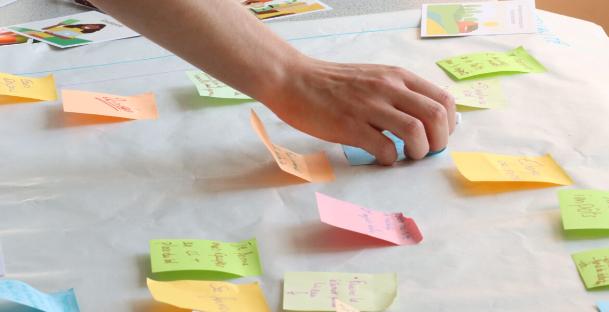
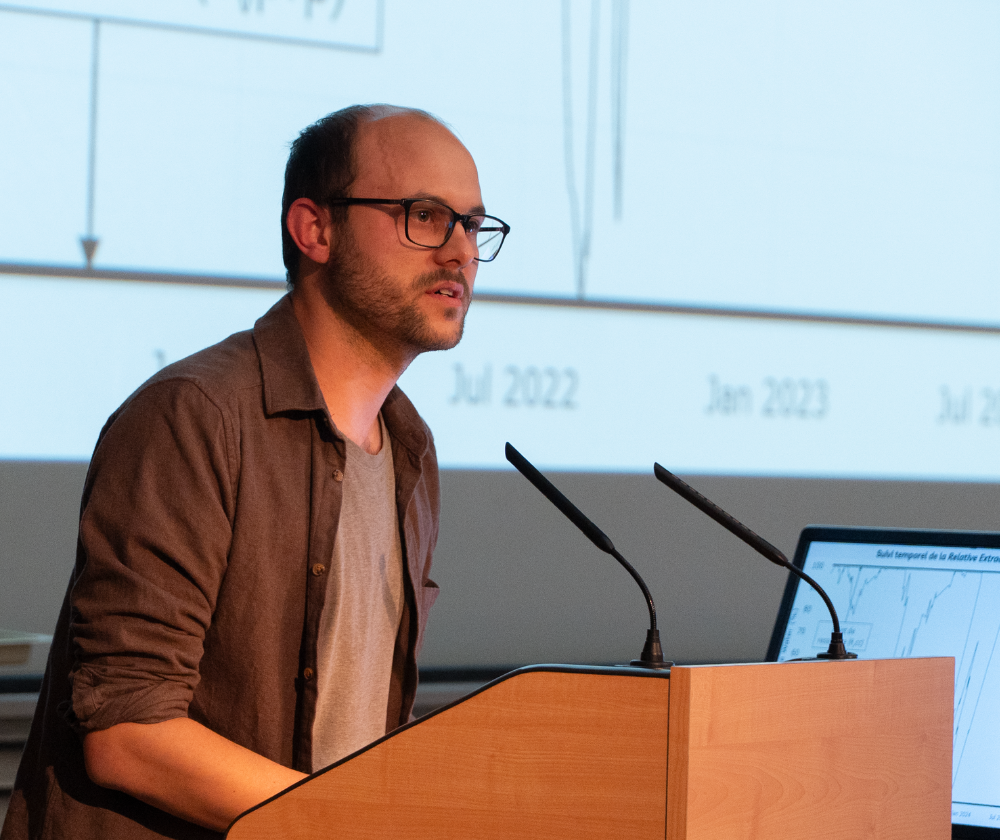
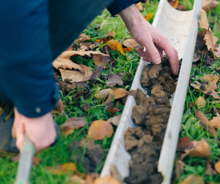

AFESAu service des sols depuis 1934
Association Française pour l'Étude du Sol
L'association qui rassemble toutes les personnes intéressées par l'étude des sols : chercheur·ses, enseignant·es, étudiant·es, agriculteur·rices et acteur·rices de la société civile.
Centre de ressources · webinaires, présentations et documents pour mieux connaître les sols et les enjeux de leur préservation
Nos projets


Journée Mondiale des Sols 2026
Organisez ou rejoignez un événement près de chez vous.

Festival européen Sols & Arts
Quand les artistes s'emparent des sols.

SOILSCAPE (Horizon Europe)
Le projet européen que coordonne l'AFES.

La Fresque du Sol
50 cartes et 3 h pour comprendre les sols, leurs fonctions et leurs menaces.

Bourses Demolon
Soutenir les jeunes chercheur·ses.

Étude et Gestion des Sols
La revue francophone des sciences du sol.
Nos missions


Agenda
- 5 déc. 2026Journée Mondiale des SolsÉvénement
- [date]Formation : description de sol sur le terrainFormation
- [date]Formation : animateur·rice pro de la Fresque du SolFormation
- 19-23 mai 2027Fête de la Nature 2027 : appel à organisationAppel
- 2-5 juil. 2027Journées d'Étude des Sols 2027 : tournoi étudiantAppel
Les sols


Formations continues
Terrain, animation, forêt, zones humides : des formations portées par les expert·es du réseau, et une offre sur mesure pour les structures.
 Se former à la description de sol sur le terrain
Se former à la description de sol sur le terrain Devenir animateur·rice pro de la Fresque du Sol
Devenir animateur·rice pro de la Fresque du Sol
Devenir référent·e sur la qualité des sols forestiers Se former à la description des sols de zones humides et à l'application SolRedOx
Se former à la description des sols de zones humides et à l'application SolRedOxAdhérer ou faire un don
Parce que l'AFES est une association, et ne peut agir que grâce au soutien de ses membres. Si vous appréciez ce que nous faisons, n'hésitez pas à faire un don ou à rejoindre le réseau de nos adhérent·es.